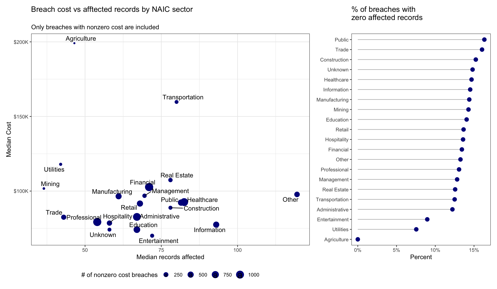
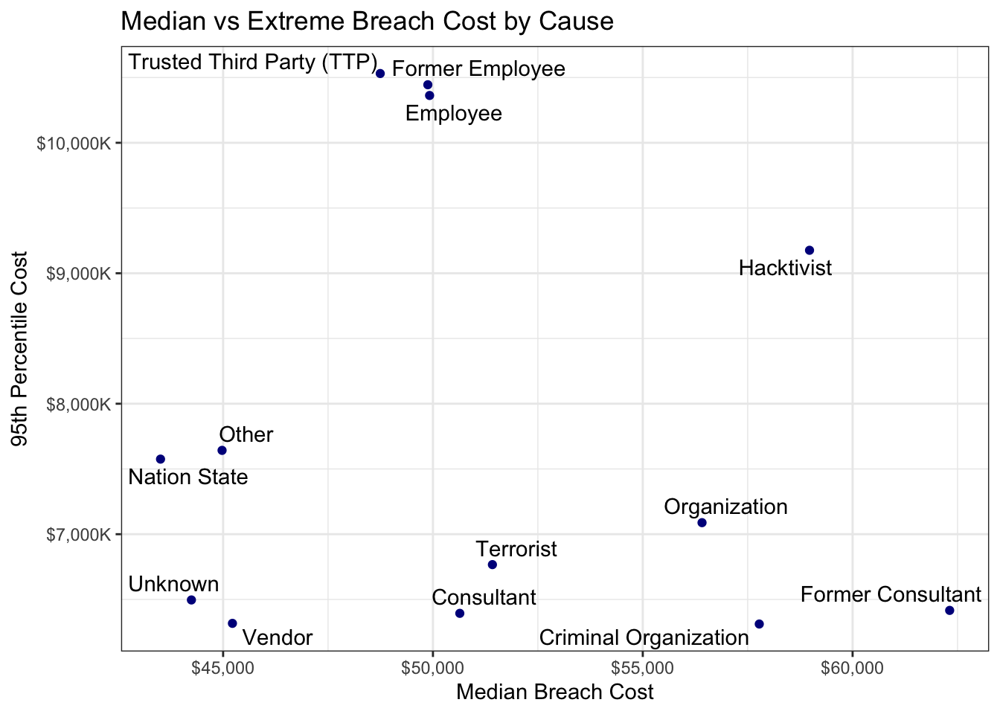

Cyentia Breaches Data
Data Summary
The skimr package provides a convenient, quick overview of the data.
breaches_skim <- skimr::skim(breaches, -c(id, breach_year))
breaches_skim| Name | breaches |
| Number of rows | 10000 |
| Number of columns | 10 |
| _______________________ | |
| Column type frequency: | |
| character | 5 |
| Date | 1 |
| numeric | 2 |
| ________________________ | |
| Group variables | None |
Variable type: character
| skim_variable | n_missing | complete_rate | min | max | empty | n_unique | whitespace |
|---|---|---|---|---|---|---|---|
| naic_sector | 135 | 0.99 | 2 | 2 | 0 | 24 | 0 |
| naic_national_industry | 135 | 0.99 | 6 | 6 | 0 | 701 | 0 |
| sector | 135 | 0.99 | 5 | 14 | 0 | 20 | 0 |
| internal_external | 706 | 0.93 | 8 | 8 | 0 | 2 | 0 |
| cause | 706 | 0.93 | 5 | 25 | 0 | 12 | 0 |
Variable type: Date
| skim_variable | n_missing | complete_rate | min | max | median | n_unique |
|---|---|---|---|---|---|---|
| breach_date | 0 | 1 | 2011-01-01 | 2020-12-31 | 2016-01-25 | 3417 |
Variable type: numeric
| skim_variable | n_missing | complete_rate | mean | sd | p0 | p25 | p50 | p75 | p100 | hist |
|---|---|---|---|---|---|---|---|---|---|---|
| affected_count | 0 | 1 | 19030.85 | 400133.2 | 0 | 3 | 34 | 495.25 | 30752654 | ▇▁▁▁▁ |
| total_amount | 0 | 1 | 4661739.13 | 92092161.8 | 0 | 3908 | 49926 | 420644.75 | 7915369031 | ▇▁▁▁▁ |
A few things immediately stand out:
affected_count&total_amountare extremely skewed and there are breaches that apparently impacted zero records and had zero dollar cost (13.7% of all breaches)sector&causeboth are missing in some cases
Additionally, there is a near equal distribution of breaches by cause and by year:
# A tibble: 13 × 2
cause n
<chr> <int>
1 Other 1450
2 Organization 741
3 Nation State 740
4 Former Consultant 739
5 Terrorist 731
6 Vendor 715
7 Employee 709
8 Hacktivist 706
9 <NA> 706
10 Trusted Third Party (TTP) 701
11 Consultant 696
12 Criminal Organization 685
13 Former Employee 681# A tibble: 10 × 2
breach_year n
<dbl> <int>
1 2011 978
2 2012 990
3 2013 976
4 2014 1011
5 2015 970
6 2016 1021
7 2017 1033
8 2018 994
9 2019 1060
10 2020 967This makes me wonder if the distribution of the raw number of breaches by cause over time are representative samples or if they’re an artificially balanced subsample from a larger data set. As a result, I suspect that comparisons of simple counts of breaches over time or the number breaches between different causes will be unlikely to show significant differences.
Breach Cost vs Affected Records by NAIC Sector
First we look at potential differences between NAIC sectors with respect to:
- Percent of breaches with nonzero cost/affected records
- Number of breaches with nonzero cost/affected records
- Relationship between breach cost & number of affected records

The Healthcare, Financial, Administrative, Education & Professional sectors appear to be the biggest targets, with the most breaches.
The Agriculture & Transportation sectors appear to have breaches that tend to incur much higher costs than other sectors, relative to the number of affected records.
The Other sector tends to have breaches that incur average costs but involve much higher than normal numbers of records. The breaches in this sector appear to be dominated by organizations like:
- Civic & Social Orgs (alumni assoc, ethnic assoc, PTAs, veterans assoc)
- Social Advocacy Orgs
- Business & Professional Orgs (lawyer/doctor/dentist orgs, trade groups, chambers of commerce)
These are all organizations that likely store large amounts of member information but may not see themselves as likely cyberattack targets, or may have extremely limited IT security resources at their disposal.
Cost Per Breach by Cause
Evaluating the cost per breach is complicated by its skewed nature. There are a significant number of breaches with zero cost and the occassional breach with extremely large costs. We’d like to convey both what a “typical” risk is and also what the extreme end of the risk may be. To do this, we can show a scatterplot of the 50th & 99th quantiles by breach cause.

Breaches caused by criminal organizations & former consultants have some of the highest median costs per breach, but are less likely to generate extremely high cost breaches compared to other causes.
Beaches caused by employees or former employees have somewhat lower median costs per breach, but the risk of an extremely expensive breach from these sources is considerably higher.
Trends in Breach Cost by Cause
Because the breach cost variable total_amount is so heavily skewed, we will estimate trends of quantiles, again focusing on an estimate of the “typical” cost (median) as well as an “extreme” cost (95%-tile).
To do this we fit a linear quantile regression model:
\[ log(totalamount + 1) = \beta_0 + \beta_1 breachdate + \beta_2 cause + \beta_3(breachdate*cause) \]
This means that the breach cause specific trend estimate is the sum \(\beta_1 + \beta_3\) for each cause.
Coefficient Summary
The resulting trend estimates are summarised in the plot and table below.
| Avg Annual % Change in Breach Cost | ||
| Estimated change in median & 95%-tile total breach cost. | ||
| Cause | Quantile: 0.5 | Quantile: 0.95 |
|---|---|---|
| Criminal Organization | -7.5% (-18.5%,0.9%) | -3.8% (-19.5%,18.6%) |
| Employee | 1.0% (-8.4%,11.1%) | -0.7% (-20.5%,22.5%) |
| Former Consultant | -12.3% (-22.7%,-0.4%) | 2.0% (-10.9%,18.0%) |
| Former Employee | 4.1% (-4.8%,14.0%) | -1.5% (-19.9%,11.6%) |
| Hacktivist | 0.6% (-11.0%,8.6%) | 10.6% (-5.4%,31.6%) |
| Nation State | -3.1% (-18.3%,8.4%) | 8.1% (-12.2%,20.7%) |
| Organization | -1.5% (-8.4%,10.0%) | 12.4% (-10.4%,30.1%) |
| Other | 3.0% (-4.0%,11.6%) | 16.2% (0.0%,23.5%) |
| Terrorist | -4.4% (-14.1%,5.3%) | 0.2% (-22.4%,14.8%) |
| Trusted Third Party (TTP) | -0.6% (-13.2%,6.5%) | 0.1% (-18.0%,12.8%) |
| Unknown | -0.3% (-11.0%,9.3%) | 5.5% (-5.9%,16.6%) |
| Vendor | -1.2% (-11.6%,6.8%) | 1.3% (-19.2%,17.8%) |
Only two cause specific trends in breach cost appear statistically significant:
- Median breach cost caused by Former Consultants has decreased at an average rate of
-12.3%per year - The 95%-tile breach cost with a cause of Other has increased at an average rate of
16.2%per year
While the remaining trends don’t appear statistically significant, several of the estimated trends are fairly large. These include large estimated growth rates in the 95%-tile breach cost caused by Nation States, Hacktivists & Organizations.
Examples of Causes with large 95%-tile changes
Finally, we can visualize some of the larger trend estimates, on a log scale.

Further Questions
- Explore various missing & unknown features in the data
- What is the cause of missingness in
sector&cause? Are some types of breaches more likely than others to have missing data here? - What comprises the
Otherbreach cause, as it appeared to be growing?
- What is the cause of missingness in
- I’ve looked at
sector&causeseparately here, but it would be interesting to look for potential interactions between the two, with respect to breach frequency and severity (cost). - Look closer at differences between breaches that involve zero cost/no affected records and those that do. Can we distinguish any risk factors that might separate the two?